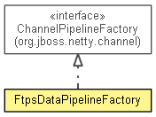

org.waarp.ftp.core.data.handler.ftps
Class FtpsDataPipelineFactory
java.lang.Object
 org.waarp.ftp.core.data.handler.ftps.FtpsDataPipelineFactory
org.waarp.ftp.core.data.handler.ftps.FtpsDataPipelineFactory
- All Implemented Interfaces:
- ChannelPipelineFactory
public class FtpsDataPipelineFactory
- extends Object
- implements ChannelPipelineFactory

- Author:
- "Frederic Bregier"
| Methods inherited from class java.lang.Object |
clone, equals, finalize, getClass, hashCode, notify, notifyAll, toString, wait, wait, wait |
FtpsDataPipelineFactory
public FtpsDataPipelineFactory(Class<? extends DataBusinessHandler> dataBusinessHandler,
FtpConfiguration configuration,
boolean active)
- Constructor which Initializes some data
- Parameters:
dataBusinessHandler - configuration - active - executor -
getPipeline
public ChannelPipeline getPipeline()
throws Exception
- Create the pipeline with Handler, ObjectDecoder, ObjectEncoder.
- Specified by:
getPipeline in interface ChannelPipelineFactory
- Throws:
Exception- See Also:
ChannelPipelineFactory.getPipeline()
Copyright © 2009-2013 Waarp. All Rights Reserved.